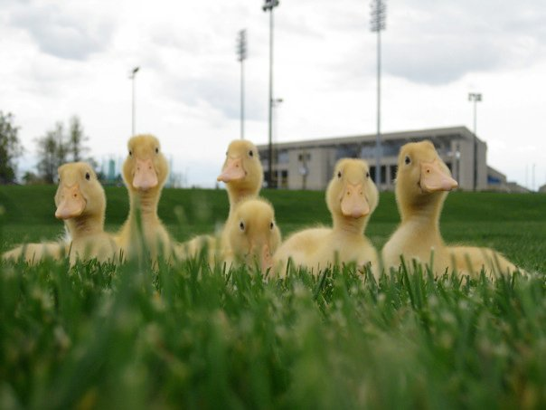

DANCING! I have been dancing since the age of 7...as a last resort after failed attempts by my parents to spark my interest in any kind of recreational sport or activity. Alas, my poor mother spent those years dragging me to class kicking and screaming because I HATED ballet. Flash forward 18 years and here I am, an accomplished dancer holding a BFA from SUNY Buffalo. I am grateful for the agony my mother willed herself to endure because many of the greatest experiences of my life have been a result of my dance career...from summers in San Francisco and New York city, performaces both grandeous and insignificant, and the odd yet inspiring people I have met along the way...to the embarrassment of tripping and falling on your face onstage and the extreme level of self consciousness that can only be acheived when forced to perform in a nude unitard, dancing is truly what has molded me into the person I am today. I am hopeful to continue my career and let it inform and shape my newfound passion and identity as a developer.
...in college, my friend bought some baby ducklings from Tractor Supply. I thought they were adorable, and so, of course, I had to also purchase my own set of six ducklings from Tractor Supply (since ducks are my favorite animal). They were housed in my friend's on-campus apartment, an excellent place for raising young livestock. We regularly took them out into the fields around campus to run around. They seriously followed me in a line. I was the mama duck! After about two weeks of waddling around pooping on all of my furniture and friends, countless swims in the bathtub and many, many, many, many changes of bedding, their little peeps turned into quacks and they became too wild for campus-living so we gave them away to a local farmer.
© 2013 Laura Crowe. All Rights Reserved.